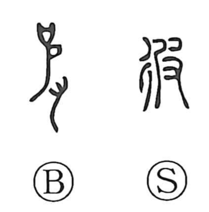

彼

Kun: kare, kano, kanata | On: hi
he ・ that
Explanation
This character sets the walking sign 彳, which suggests going or acting outward, beside 皮, used here for its sound hi. In form it looks like a phonetic compound implying movement, but in usage it came to write the pronouns “he” and “that.” Already in bronze inscriptions 皮 appears as a pronoun, as in 皮之吉人, read kano kitsujin, meaning “this fortunate man.” To distinguish this pronominal 皮 from 皮 meaning “hide, leather,” the step radical 彳 was added, yielding 彼. In the set 彼此, “that and this,” note that 此 originally meant “something small,” and, like 彼, was later employed as a demonstrative by borrowing its sound.